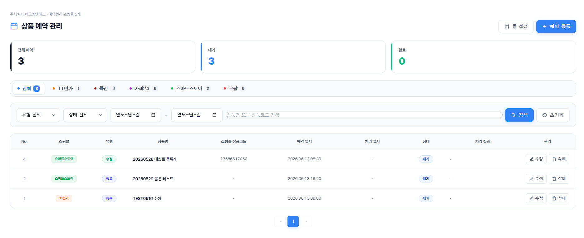
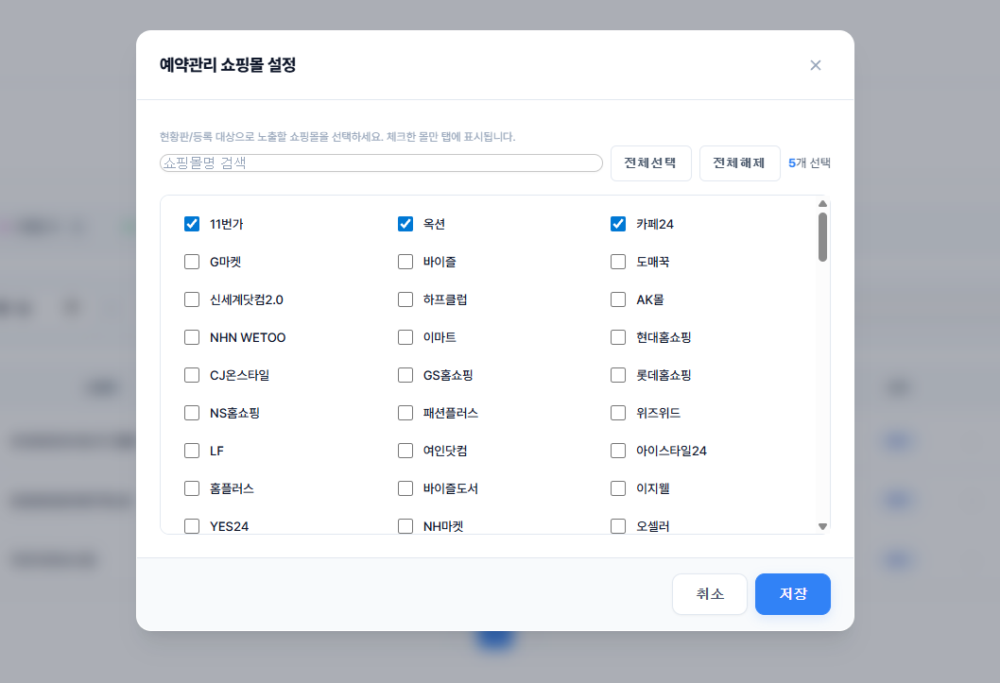
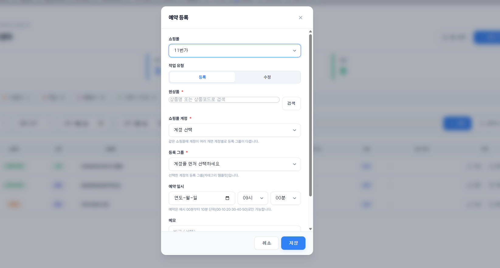

상품등록수정 예약기능 개발
예약 작업 배치 처리 / API 연동 자동화 / 대량 상품 예약 관리 / 비동기 큐 구조
이커머스 운영 환경에서 특정 프로모션이나 시즌 이벤트 시점에 맞춰 상품의 등록 및 수정(판매 여부, 재고, 가격 등) 작업을 수동으로 처리하던 리스크를 방지하기 위해,
사용자가 지정한 미래 시점에 상품 등록/수정 작업을 자동으로 스케줄링하여 다수의 쇼핑몰 API로 일괄 연동해주는 예약 처리 시스템을 설계하고 구현했습니다.
PHP
MySQL
Scheduler / Batch
REST API
Task Queue
Project Highlights
운영 자동화
배치 기반 예약 처리
지정된 시간에 예약 배치 프로그램이 자동으로 실행되어 수작업 리스크 해소
다중 채널 대응
쇼핑몰 API 연동
연동된 쇼핑몰(몰)별 API 요구 조건과 속도 제한을 고려한 안정적 처리
운영 가시성
작업 이력 모니터링
작업 대기/진행/완료/실패 상태 및 실패 시 구체적인 API 에러 사유 로깅 및 시각화
Problem
배경 및 기존 한계
- 이벤트 오픈 및 프로모션 시점에 맞춰 새벽이나 주말에 개발자가 직접 소스 변경 또는 DB 작업을 수기 처리
- 일시적인 트래픽과 대량의 API 요청이 한꺼번에 몰릴 때 쇼핑몰 API의 제한 사항(Rate Limit)을 준수하지 못해 동시성 이슈 및 연동 누락 발생
- 수행된 이력과 에러 로그를 확인할 수 있는 수단이 없어 장애 발생 시 신속한 원인 파악 및 재작업이 어려움
Solution
해결 방식 및 기능 구성
- 작업 예약 등록 기능: 관리자 화면에서 원하는 일시, 대상 연동 몰, 예약 대상 상품 및 수정 데이터를 간편하게 지정하여 예약을 생성하는 프로세스 구축
- 비동기 스케줄러 배치 구성: 주기적으로 예약 테이블을 감시하며 실행 대기 상태인 작업들을 수집하고, 비동기 처리를 기반으로 대상 쇼핑몰 API를 안전하게 호출하는 자동화 로직 구현
- API 실행 로그 및 에러 트래킹: 전송 실패 건에 대한 API 응답 코드와 에러 메시지를 이력 DB에 상세히 저장하고 화면에 시각화하여 사용자가 직접 실패 사유를 인지하고 보완할 수 있도록 제어 구조 고도화
Technical Points
- 각 쇼핑몰 API 제한(Rate Limit)을 준수하면서 대량의 예약을 순차적/비동기적으로 처리하기 위해 대기열 큐 및 데이터 분산 수집 패턴 설계
- 배치 구동 중 에러 발생 시 데이터 불일치를 방지하기 위한 DB 트랜잭션 관리와 작업 재시도(Retry) 로직 도입
- 예약 작업의 상태(대기, 진행, 완료, 실패)를 명확히 구분하여 데이터 불일치 및 중복 전송 위험 제거
개발된 예약 시스템의 주요 관리 화면입니다. 예약을 등록하고, 연동 몰을 설정하며, 전체 작업 상태를 직관적으로 조회할 수 있습니다.
Screens

상품예약관리 메인화면: 현재 등록된 예약 건의 작업 상태(완료, 대기, 진행 중)와 상세 정보를 일괄 조회 및 관리하는 페이지

상품예약관리 몰선택화면: 상품 수정 예약 시 연동을 진행할 쇼핑몰(스토어)을 유연하게 체크하여 적용 범위를 설정하는 화면

상품예약관리 작업예약화면: 예약 실행 시간, 작업 제목 및 예약 처리할 구체적인 정보(등록, 수정 등)를 입력하고 예약 건을 생성하는 등록 폼